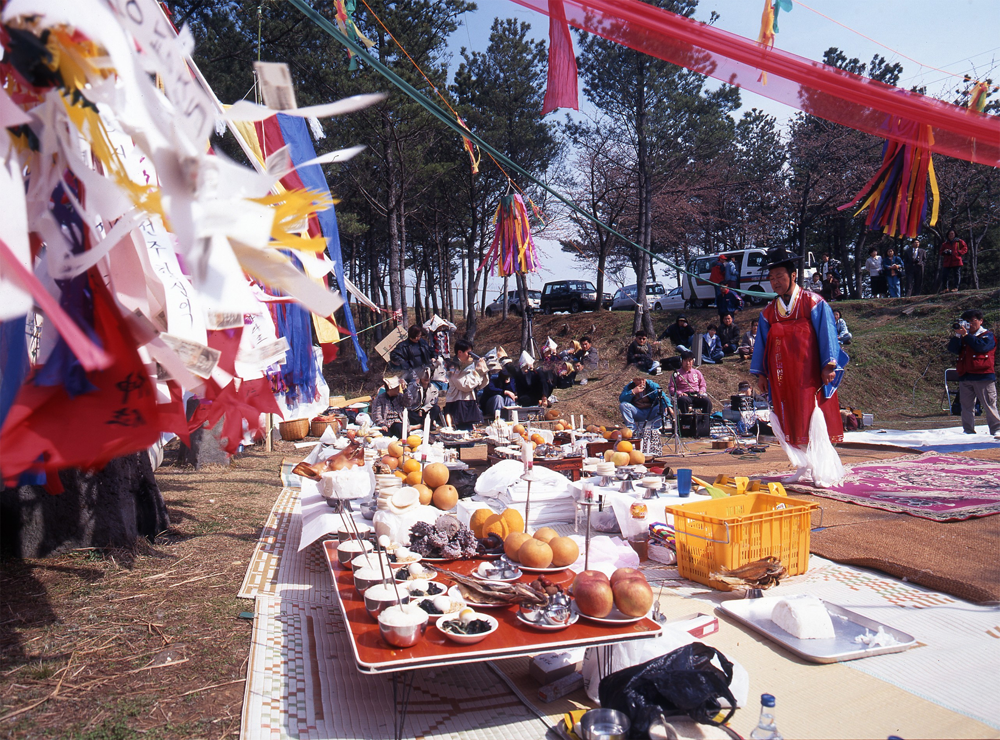

궷물오름 산물
유형별정보 > 사진 > 지역사회

백중제
목차
I. (사)이어도연구회 개관 4
1. 창립배경 4
2. 창립경과 4
3. 주요현황 7
II. 2012년 주요사업 성과 10
1. 학술대회 및 행사개최 10
(1) 국제학술대회 10
(2) 국내학술대회 28
(3) 국내전문가 워크샵 39
(4) 이어도 아카데미 개최 44
(5) '해양누리호' 통한 이어도해양과학기지 방문 실시 52
(6) 학습동아리 세미나 55
(7) 이어도 문학회 활동 지원 56
2. 대외협력사업 60
(1) 국내외 해양관련 연구기관 네트워크 구성 60
(2) 제주여성 이어도지킴이 활동지원 63
(3) 청소년 이어도지킴이 활동지원 67
(4) 이어도 아카데미 원우회 이어도 홍보 72
(5) 청년 이어도지킴이 출범 73
(6) 〈제주KBS〉 아침뉴스 이어도 해역 날씨정보 제공 74
3. 연구과제 75
(1) 2012 이어도연구 수행과제 75
(2) 2012 이어도연구과제 최종보고서 76
4. 연구 및 홍보자료 제작·배포 78
(1) 언론홍보 추진-중국의 이어도 동남공정(東南工程) 적극 대응 78
(2) 이어도 문화홍보-이어도 노래제작 78
(3) 연구자료 배포 81
(4) 영문홈페이지 개설 및 운영 91
- 형태
- 사진
- 학문분야
- 순수과학 > 환경
- 생산연도
- 2020년
- 저자명
- 제주학연구센터
- 소장처
- 제주학연구센터
- 조회
- 2,000

제주학 아카이브에서 창작 및 제공하는 저작물은 “공공누리 출처표시” 조건에 따라 이용할 수 있습니다.